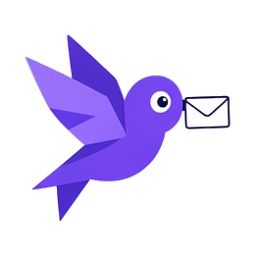
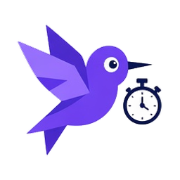
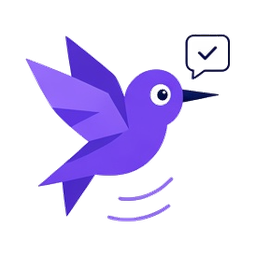

Getting started.
Made simple.
From your first reminder to keeping your data safe and understanding Premium. Find a useful next step.

How to set your first reminder in DewCue
Turn one thing you need to remember into a clear task, a sensible time, and an alert you have checked.
Read the guide
How to follow up on an email without keeping it in your head
Save the conversation you want to revisit, choose a useful time, and check the reply yourself.
Read the guide
How to build a simple focus and break routine
Choose one task, give it a clear time window, and make room for a break that suits your day.
Read the guide
How to check DewCue reminders and browser notifications
Understand the alert styles, use the built-in test button, and run a small check before relying on a reminder.
Read the guide
How to make a reminder from a web page or selected text
Save a page link or highlighted passage with a reminder, understand what stays local, and leave enough context to act later.
Read the guideHow to use DewCue’s Chrome side panel while you work
Keep the same reminder list beside your page, review Today and Overdue, and choose a useful next action without making a separate list.
Read the guide
Birthdays and milestones in DewCue: limits and local storage
See the Free plan allowances, understand where birthday and milestone entries live, and plan useful actions around important dates.
Read the guide
DewCue backups and changing computers: what moves and what stays local
Understand Chrome sync, locally stored information, downloaded backups, and Premium activation before changing computers or uninstalling DewCue.
Read the guideHow to activate DewCue Premium and find your licence email
Understand the emailed licence key or requested code, troubleshoot a missing activation email, and keep Premium access separate from reminder data.
Read the guideYour day. A little clearer.
Bring your reminders, follow-ups and focus time together in Chrome.